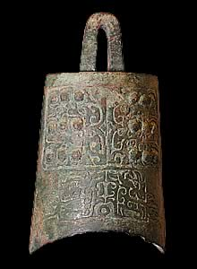

Zhou dynasty - Wealthy Music LoverMusic played a very important part in court music in Ancient China. Bells, chimes, drums, zithers and flutes were some of the instruments used. 
A bell Chinese bells are different from the bells that are played in the Western world. There was no 'clapper' on the inside; instead they were struck either on the lip or on the flat panel between the sets of knobs. Those bells with a curved lip could play two notes. In 1978, archaeologists uncovered a large tomb in Hubei province. This was the burial of Marquis Yi of Zeng. In all, over 124 musical instruments buried with him in all including flutes, panpipes, drums, mouth organs and a set of 65 bells. In another chamber of his tomb a group of women are buried. It is presumed that these were the musicians in his orchestra. They were killed so they could continue to play for him in the afterlife. |